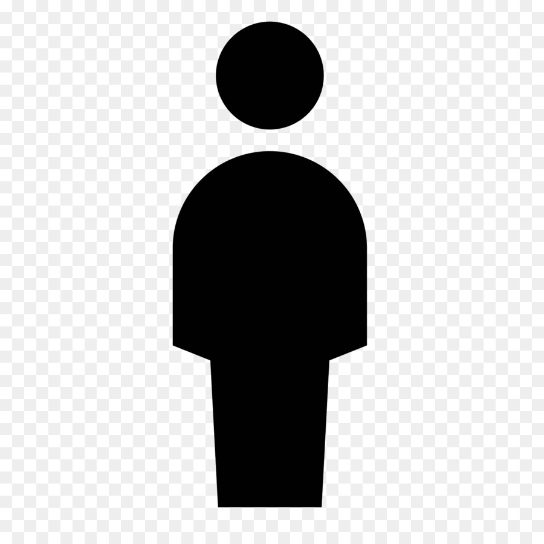

Estudiantes |
||
Nombre |
Apellido |
 |
Santiago |
Rodriguez |
|
Samuel |
Leal |
|
Jhonatan |
Vergara |
|
Adrian |
Gomez |
|
HTML es un lenguaje que estructura las paginas web lanzado en 1993 por Tim Berners-Lee, con el fin de compartir articulos cientificos, pero que sería crucial más adelante con la ampliación en terminos de alcance y estructuración del WWW (World Wide Web). Este lenguaje además cuenta con varias versiones, siendo html5 el más reciente lanzado el 28 de octubre de 2014 (desplazando a su antecesor HTML4 lanzado en 1999), ofreciendo la posibilidad de añadir archivos multimedia a la pagina web como videos o audios, programar aplicaciones web, servicios de geolocalización entre otros.
En caso de que HTML se actualice con una nueva versión, las paginas web que se encuentran en internet automaticamente se actualizarán mediante una actualización del navegador que se esté usando, menos los que ya no presenten actualizaciones como lo es internet explorer, por lo que los desarrolladores desarrolladores de páginas web pueden estar tranquilos
CSS (CASCADING Style Sheets) son hojas de estilo en cascada. CSS es un lenguaje que complementa y formatea HTML (HyperText Markup Language, Lenguaje de Marcación de Hipertexto) organizando mejor las líneas y agregando nuevas posibilidades al código. Con él, puedes modificar prácticamente todo dentro de tu layout (como colores, background, características de la fuente, márgenes, rellenos, posición, incluso la estructura del sitio con la propiedad float). CSS ayuda a mantener la información de un documento separada de los detalles de cómo mostrarlo. Los detalles de cómo mostrar el documento, se le conoce como el estilo. Mantienen el estilo separado del contenido, podemos evitar duplicar contenidos, facilitar el mantenimiento de nuestro sitio web y más.
Javascript es un lenguaje de programación débilmente tipado y dinámico lanzado el 4 de diciembre de 1995 por brendan eich que influyó a otros lenguajes como TIScript. Este lenguaje ha permitido ha desarrolladores a traves del mundo a añadir funciones interactivas a sus paginas web (como animaciones y mapas interactivos)mejorando la experiencia del usuario asi como la competitividad de la empresa que la pagina web representa.